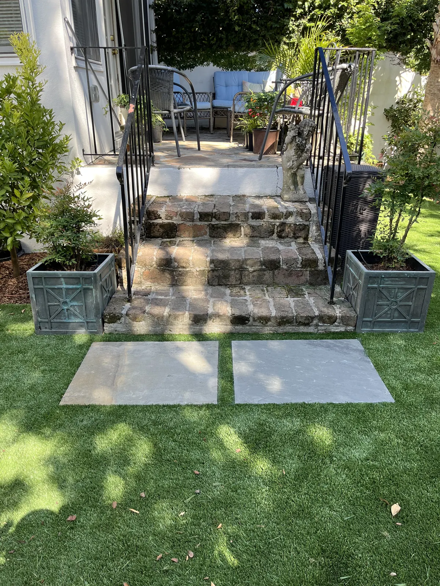
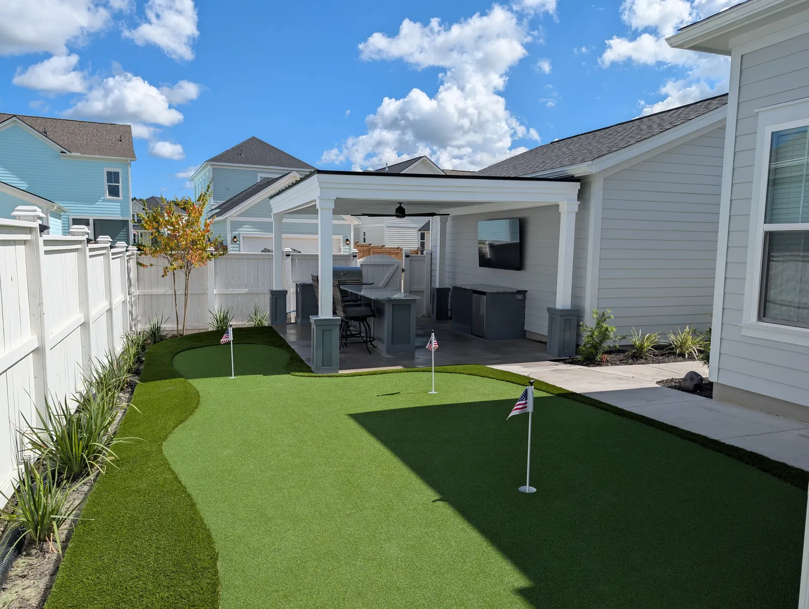

Artificial Turf & Synthetic Grass Installation in Charleston, SC
Professional Artificial Turf in Charleston, SC

Artificial turf offers the perfect blend of beauty, durability, and low maintenance - making it one of the fastest-growing landscaping upgrades in the Charleston area. Whether you want a flawless front yard, a lush backyard play area, a pet-friendly surface, or a clean and modern commercial landscape, Cramers Landscaping delivers long-lasting turf solutions engineered for Lowcountry conditions.
As a trusted leader in artificial turf installation Charleston homeowners rely on, we design and install synthetic grass systems that stay green all year, drain efficiently through heavy rainfall, and resist the effects of humidity, salt air, and everyday use. From Folly Beach to Mount Pleasant, our artificial grass systems provide a clean, soft, resilient surface that never needs mowing, watering, or fertilizing.
Contact UsWhy Artificial Turf Is a Smart Choice for Charleston Homes
A natural grass lawn is beautiful - but in Charleston’s coastal climate, it can be difficult and expensive to maintain. Between sandy soils, thick shade areas, salt air, drainage challenges, and intense summer heat, grass often struggles to stay healthy.
Benefits of Artificial Grass for Lowcountry Properties
- Year-round green appearance with zero mowing, watering, or fertilizing
- Superior drainage - ideal for yards that flood or hold water after storms
- Extremely durable and resistant to humidity, salt air, and heavy foot traffic
- Pet-friendly and easy to clean, with no muddy paws or torn patches
- Reduces allergies by eliminating pollen exposure from grass
- Perfect for shaded areas where natural turf won’t grow
- Safe, cushioned surface for kids’ play zones and outdoor living areas
- Long lifespan - high-quality turf lasts 15–20+ years with proper care
- Eco-friendly - no chemicals, pesticides, or excessive water use
Whether you want a pristine lawn or a low-maintenance solution for a challenging landscape, artificial turf is one of the most effective upgrades you can make to your Charleston property.
 1 / 2
1 / 2 2 / 2
2 / 2Our Turf & Synthetic Grass Services

Cramers Landscaping offers complete artificial turf installation Charleston SC homeowners and commercial clients count on for precision, durability, and clean finishing. Our team manages the entire process - from grading and base preparation to drainage planning and final grooming.
Our turf installation includes:
- Site evaluation and custom layout design
- Removal of old sod/vegetation
- Grading and drainage system planning
- Compacted aggregate base for long-term stability
- Professional turf cutting, seaming, and securing
- Infill application for cushion, durability, and cooling
- Final grooming and walkthrough
Turf Cleaning & Maintenance
While artificial grass is low-maintenance, periodic cleaning improves longevity.
Our turf maintenance services include:
- Power brushing to lift flattened fibers
- Pet odor treatment
- Weed edge control
- Infill top-offs
- Debris removal and rinsing
 1 / 2
1 / 2 2 / 2
2 / 2Turf Restoration & Re- Leveling
Perfect for older synthetic grass systems that:
- Have uneven areas
- Need new infill
- Require seam or edge repairs
- Need improved drainage performance
Pet-Friendly Turf Systems
Charleston is a pet-loving city - and homeowners want lawns that stay clean and durable.
Our pet turf systems include:
- Heavy-drain backing
- Antimicrobial infill
- Odor-control base layers
- High-durability fibers resistant to digging

1 / 2 2 / 2
2 / 2Commercial & HOA Turf Solutions
We install commercial turf for:
- Apartment communities
- Dog parks
- Pool deck areas
- Business courtyards
- Playgrounds
- Model homes & developments
- HOA common areas
Built for Charleston County’s Climate
Charleston’s climate is beautiful - but harsh on outdoor materials. Heat, humidity, sand, salt air, and heavy rainfall require an installation approach that goes beyond “standard.”
Cramers Landscaping uses:
- Permeable turf systems designed for heavy rain
- Coastal-rated, corrosion-resistant materials
- Sealed seams and edges for long-term stability
- High-flow drainage base layers
- UV-resistant fibers that stay vibrant under strong sunlight
From waterfront homes on Sullivan’s Island to shaded Summerville yards, our systems are customized to each property.
Why Homeowners Choose Cramers Landscaping

Cramers Landscaping is known throughout Charleston County for quality craftsmanship, attentive service, and long-lasting landscape solutions.
Our turf installation team brings together technical precision, drainage expertise, and top-tier materials to ensure your synthetic lawn performs beautifully for years.
Our promise:
- Expert design and consultation
- Professional, code-compliant installation
- Coastal-rated materials for long-term durability
- Smart drainage planning for flood-prone areas
- Pet-friendly & child-safe turf systems
- Responsive service and maintenance support
Frequently Asked Questions
How much does artificial turf cost in Charleston, SC?
Artificial turf pricing varies based on turf type, square footage, base prep, and drainage needs. Every property is unique - contact Cramers Landscaping for a custom quote.
How long does artificial grass last?
High-quality artificial turf typically lasts 15–20+ years with proper installation and upkeep.
How do you install artificial grass?
Professional installation includes removing existing grass, creating a compacted drainage base, installing the turf, securing seams, and applying infill. DIY often leads to drainage issues - professional installation is highly recommended.
Is artificial grass safe for pets?
Yes - our pet turf systems resist odors, drain quickly, and prevent digging damage.
How do you clean artificial grass?
Light rinsing, occasional brushing, and pet enzyme treatments (if needed) keep turf fresh. We also offer scheduled cleaning services.
Does artificial grass drain well during Charleston storms?
Absolutely. Our artificial turf systems are designed with permeable backing and a high-drainage base engineered for coastal rain patterns.
Request a Free Artificial Turf Consultation
Ready to enjoy a lush, maintenance-free lawn? Cramers Landscaping is here to help. We’ll inspect your property, discuss your goals, recommend the ideal turf type, and create a custom plan built for Lowcountry durability.
Whether you’re located in Charleston, Mount Pleasant, Summerville, West Ashley, Folly Beach, or anywhere in Charleston County, our team is ready to elevate your outdoor space.
Call us today or request a consultation online - Cramers Landscaping, your trusted choice for Charleston artificial turf installation.